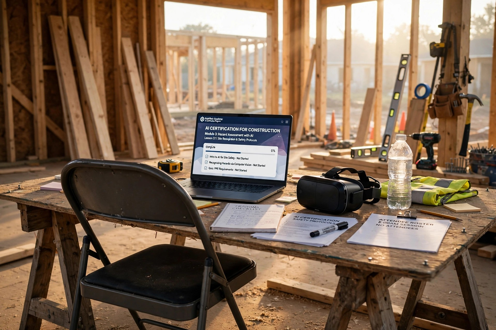

Microsoft Just Trained a Million Union Workers on AI. The Residential Builder Shortage Hit 400,000 and Nobody Signed Them Up.
Edward Brady runs the Home Builders Institute, the construction industry's largest workforce development nonprofit. In March, he told Homes.com something that should have gotten more attention than it did: residential construction workers are leaving for data-center jobs, and they are not coming back. Commercial projects offer longer timelines and steadier paychecks. Residential builders average $39.40 an hour. The broader construction industry pays $39.70. Thirty cents doesn't sound like much until you factor in the stability gap, the benefits gap, and the fact that a data center doesn't lay you off when interest rates spike.
One month later, Microsoft and North America's Building Trades Unions announced a nationwide AI training initiative. No-cost AI literacy courses. Industry-recognized credentials. Integration with union apprenticeship programs in 34 states. The press release mentioned "millions of skilled craft professionals." It did not mention the residential builder who frames your house with a crew of four.
That same week, DEWALT released a study showing that 86 percent of construction professionals feel prepared to work with AI. Read the fine print and the confidence evaporates. Their primary training source is YouTube, at 40 percent. Coursera comes second at 39 percent. Video tutorials, 42 percent. Nobody is learning AI through a structured credential program because, for residential trades, no structured credential program exists.
What “49 Percent” Actually Means
NAHB's July 2025 Housing Market Index survey produced a number that got passed around at builder conferences all fall: 49 percent of single-family homebuilders use AI in some capacity. If you stopped there, you'd think the industry was halfway through a technology revolution. Nobody stopped there for long.
Twenty percent of those builders use AI to write marketing materials. That is ChatGPT composing a Facebook ad for a spec house. Eleven percent use it for market analysis and project planning. Below that, the numbers collapse. Fewer than 5 percent of builders use AI for any of ten other business functions. Less than half a percent use it to monitor safety on a jobsite. One percent use it to operate any kind of automated construction equipment.
When NAHB asked non-users how likely they were to start using AI in the next two years, the answers followed the same pattern. Marketing scored 3.6 out of 5. Interacting with the local building department scored 1.9. Operating automated equipment scored 1.7. Builders aren't skeptical of AI in theory. They're skeptical that anyone is building AI tools for the work they actually do.
Where the Training Money Goes
Microsoft's partnership with NABTU has already trained 1,500 instructors at hands-on training centers. The new phase adds AI literacy courses through LinkedIn Learning and extends to TradesFutures, a nonprofit that connects people to union construction apprenticeship programs. It is, by any measure, a serious investment in making AI accessible to people who work with their hands.
It is also an investment that flows through union infrastructure. Union density in residential construction runs well below the commercial and industrial sectors where NABTU's member unions concentrate their organizing. A framing crew working new subdivision homes in Phoenix or Charlotte is almost certainly non-union. Nobody at Microsoft or NABTU is designing AI literacy credentials for that crew. The partnership's own framing says it aloud: "the people and communities building the AI economy." Data centers, not duplexes.
DEWALT's approach is different in form but similar in reach. Their pilot program runs through the Associated Builders and Contractors Central Florida chapter's Innovation and Technology Center. ABC chapters serve commercial general contractors, specialty contractors, and suppliers. DEWALT committed $75,000 to ABC's Trimmer Construction Education Fund for AI-related grants, and they're supporting a monthly "AI Toolbox Takeaways" webinar series. All useful. All aimed at companies large enough to belong to a trade association and send employees to a training center.
Your remodeler doesn't belong to ABC. Your roofer doesn't attend CONEXPO. The residential subcontractor ecosystem runs on word of mouth, supply-house relationships, and a foreman who learned the trade from his father-in-law. When that ecosystem needs training, it watches a video on a phone propped against a nail gun.
A Book Is Not a Program
In June, NAHB's BuilderBooks division published "AI in Residential Construction" by Grace Tsao Mase, a Yale-trained architect with three U.S. patents and a multi-state contractor's license. Two hundred forty-six pages covering estimating, bookkeeping, design visualization, client communication, and workforce management. The book claims builders using AI can complete projects up to 30 percent faster without sacrificing quality.
Thirty percent faster is a staggering claim, and it will get repeated at every local Home Builders Association chapter meeting for the next year. Some of it will be contextualized properly. Most of it will not. But the existence of the book matters less than the question it can't answer: who is going to teach this material to the carpenter who reads at a tenth-grade level and has never opened a spreadsheet?
A book assumes the reader can bridge the gap between "here's what AI can do" and "here's how I integrate it into my Tuesday." The commercial construction world has that bridge. It's called a technology department, or a BIM coordinator, or a project controls team. The typical residential builder has a cell phone, a pickup truck, and QuickBooks. The gap between knowing AI exists and deploying it operationally is not a knowledge problem. It is an infrastructure problem.
What VR Trains and What It Doesn't
Interplay Learning's VR Crane Simulator supports ten crane types across 1,200 scenarios. Konecranes adopted it and now trains twice as many operators per session without taking equipment out of production. Liebherr partnered with Tenstar for tower crane simulation. ITI was a finalist in CONEXPO's Next Level Awards. The VR training ecosystem for heavy equipment operators is real, mature, and expanding fast.
It is also entirely irrelevant to residential construction. Nobody is building a VR simulator for residential framing, where the skill is reading a set of plans and turning lumber into load-bearing walls without a single member out of plumb. Nobody is building one for residential electrical, where the challenge is routing wire through existing walls without cutting the wrong thing. Nobody is building one for roofing, where the craft knowledge is as much about weather and material behavior as it is about nailing patterns.
Residential trades don't scale the way crane operation scales. A crane is a machine with defined parameters. A house is a thousand improvised decisions made by workers who assess conditions in real time. VR can teach the machine. It has not figured out how to teach the judgment.
The Workers Who Left
HBI estimates the skilled labor shortage costs homebuilders $10.8 billion annually and prevents the construction of roughly 19,000 single-family homes every year. Smaller builders experience the worst delays, averaging nearly two extra months per project because they can't staff their crews. The Bureau of Labor Statistics reported the construction industry shed 11,000 jobs in February 2026 alone.
Brady's point about data centers deserves repeating: the very technology that is creating AI training programs for commercial workers is the same technology that is pulling those workers out of residential construction. Data centers need electricians, concrete workers, steel erectors, HVAC technicians. They pay competitive wages on multi-year timelines with benefits packages that small residential outfits cannot match. Workers go where the work is, and the work is increasingly not houses.
When housing demand rebounds, those workers will not automatically come back. They will have retrained. They will have advanced. They will have credentials from Microsoft and certifications from DEWALT-funded programs. The residential builder who lost them will have the same YouTube tutorials and the same labor shortage, minus the workers who used to answer his calls.
What It Would Take
Residential AI training doesn't need a different technology. It needs a different distribution channel. Microsoft's LinkedIn Learning courses could serve a non-union framing crew as easily as a union electrician. DEWALT's AI curriculum could run through lumberyards and supply houses where residential subs already go every morning. NAHB's book content could become a mobile-first, Spanish-language training module instead of a $50 paperback.
None of this is technically difficult. It is structurally inconvenient. Union programs have infrastructure: training centers, apprenticeship pipelines, employer partnerships. Residential builders have none of that. Reaching them means going to where they are, which is a job site, a supply counter, or a parking lot at 6 a.m. It means designing training for people who have forty-five minutes on a lunch break, not eight hours in a classroom.
Until someone builds that bridge, the AI training revolution in construction will do what every other construction innovation has done. It will transform the commercial sector, generate impressive case studies, win awards at trade shows, and leave the person building your house exactly where they started.
Sources: NAHB/Wells Fargo Housing Market Index Survey, July 2025; DEWALT AI Training Gap Study, April 2026 (dewalt.mediaroom.com); Microsoft-NABTU AI Training Partnership announcement, April 2026 (news.microsoft.com); Home Builders Institute Construction Labor Market Report, 2025; Interplay Learning/ITI VR Crane Simulator product data, CONEXPO 2026; NAHB BuilderBooks "AI in Residential Construction" by Grace Tsao Mase, June 2026; Bureau of Labor Statistics construction employment data, February 2026; Edward Brady (HBI CEO) interview via Homes.com, March 2026.